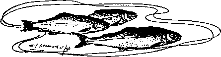
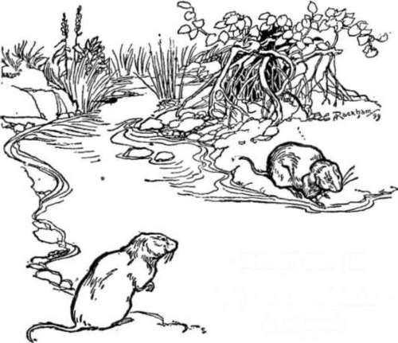

Dry, Fly Fishing. Part 6
Description
This section is from the book "Fly Fishing", by Sir Edward Grey. Also available from Amazon: Fly Fishing.
Dry, Fly Fishing. Part 6
Very pleasant the evening is after a successful day in hot, bright weather in June. Let us suppose that the angler has caught some three brace of trout in the day, and a brace and a half in the evening on good water. He will then have had plenty of interest and excitement, moments of anxiety and even of disappointment, but all contributing at the end to give a delightful satisfactory feeling of successful effort. Some great events, some angling crisis there will have been during the day, to which his thoughts will recur often involuntarily. Some incidents will seem to have been photographed upon his mind, so that he can recall clearly not only the particular things done or seen, but his own sensation at the time. What he thinks about in the evening will not be only of angling, but of the scenes in which he has spent the day. I am often ashamed to think how much passes unnoticed in the actual excitement of angling, but the general impression of light and colour, and surroundings is not lost; some is noted at the time, and some sinks into one's mind unconsciously and is found there at the end of the day, like a blessing given by great bounty to one who was too careless at the time to deserve it. May is the month of fresh leaves and bright shrubs, but June is the month in which the water meadows themselves are brightest. The common yellow iris, ragged robin and forget-me-not make rough damp places gay, and the clear water in the little runnels amongst the grass sparkle in the sun. Of wild shrubs which flower in June, there are two so common that they seem to possess the month and meet the eye everywhere. One is the wild rose, and the other is the elder, and great is the contrast between them. The commonest sort of wild rose is surely the most delicate of all shrubs in spite of its thorns. It is exquisitely delicate in the scent, colour, form and character of its flowers, and there is nothing more graceful in nature than the way in which a long spray of wild rose in full blossom offers its beauty to be admired. I am not so fond of the elder; when one is close to it there is a certain stiff thickness about the bush, and a deadness of colour both of leaves and flowers, and the scent is heavy and spiritless. But masses of elder flower at a distance have a fine foamy appearance, and I always feel that they are doing their best to honour the season. Though the sun may be as hot as midsummer, everything in the first half of June seems young and fresh and active. Birds are singing still, and for a week or two it seems as if the best of spring and summer, warmth and songs, luxuriance and freshness, were spread abroad so abundantly that it is almost too much. The cup of happiness is full and runs over. Such may be one's last thoughts in the quiet of approaching night after sounds have ceased, and in the perfect enjoyment of " that still spirit shed from evening air".
As June draws to a close, and during the whole of July, the rise during the day becomes more uncertain and feeble. There are many days in July when the dry fly angler spends more time in watching and waiting than in active fishing. His best chance before the evening will be between ten and one o'clock, and though he must be prepared for very light baskets, yet there are mornings in July when trout are to be found feeding slowly and quietly here and there, and when they will take a red quill gnat if it is put to them attractively. I have known days in July, when the result of a morning's fishing has been unexpectedly good, equal in total weight to that of the very best days in other months, and equal also in regard to the size and condition of the individual fish.
In August I have only once had a morning's fishing which could fairly be compared, as regards the total weight of trout landed, with the good days of earlier months, and it always seems to me that the condition of the trout in this month ceases to be quite first-rate. Of September, on dry fly rivers, I have had no experience. Anglers who write of it agree in saying that the trout rise better, but that their condition has fallen off, and that an unduly large proportion of female fish are killed.

Continue to: